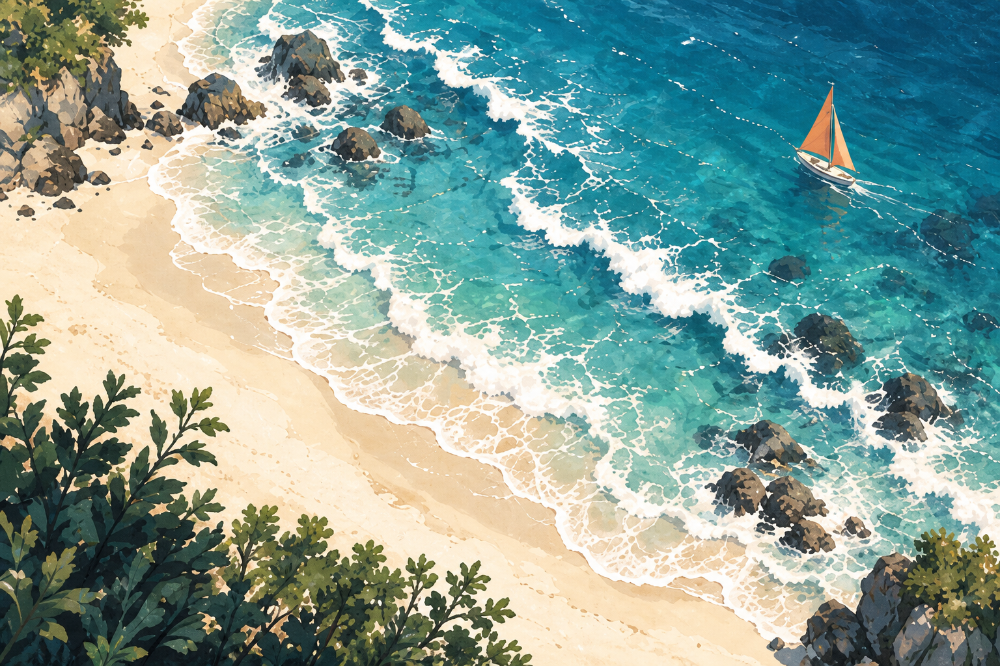

把喧嚣留在岸上。滑动、相遇，合成你的 2048。

2048
方向键 / WASD · 手机滑动
用方向键、WASD，或在棋盘上滑动，移动所有方块。两个相同的数字碰到一起，就会合成它们的和。
每次有效移动后，会出现一个 2 或 4。合成 2048 即可获胜，还能继续挑战更大的数字。棋盘填满且无法合并时，本局结束。
撤销可退回最近一次有效移动；进度与最高分自动保存在当前浏览器。没有倒计时，慢慢来。
本局进度将重新开始，最高纪录会保留。
请开启浏览器 JavaScript 后游玩。